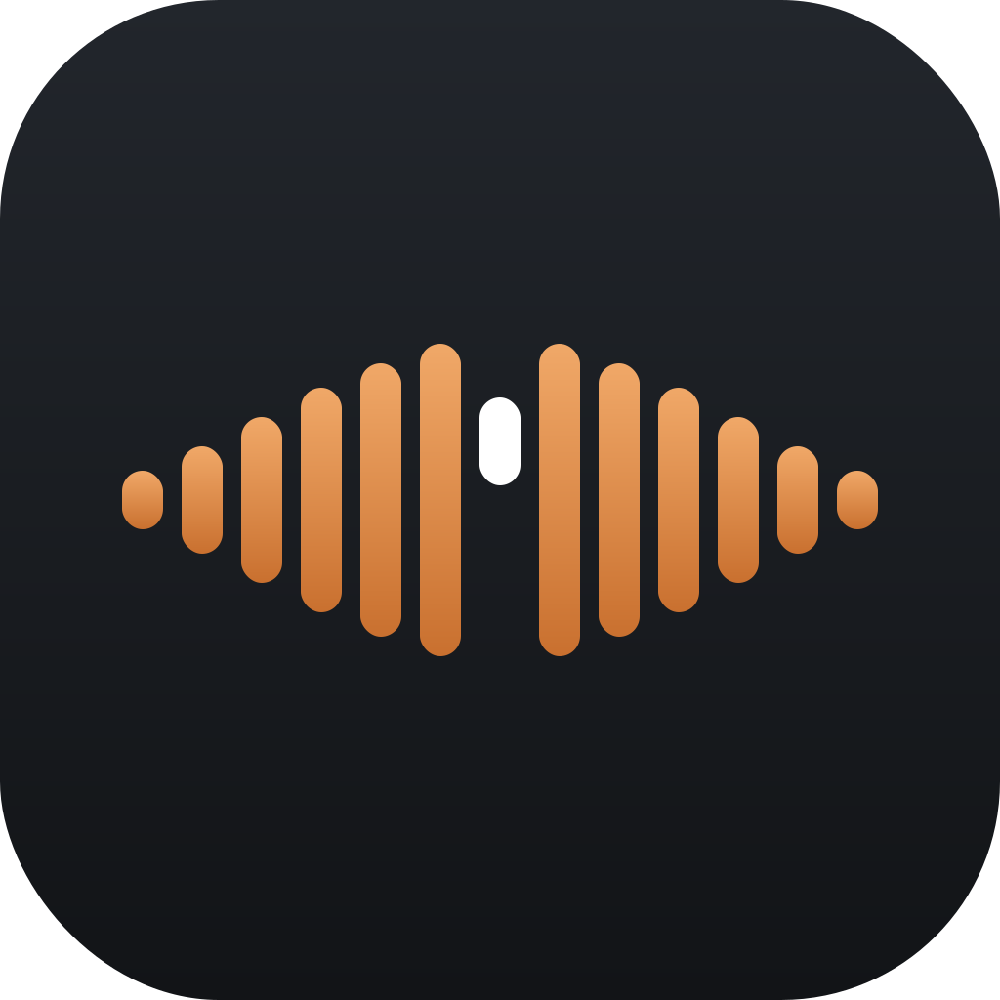
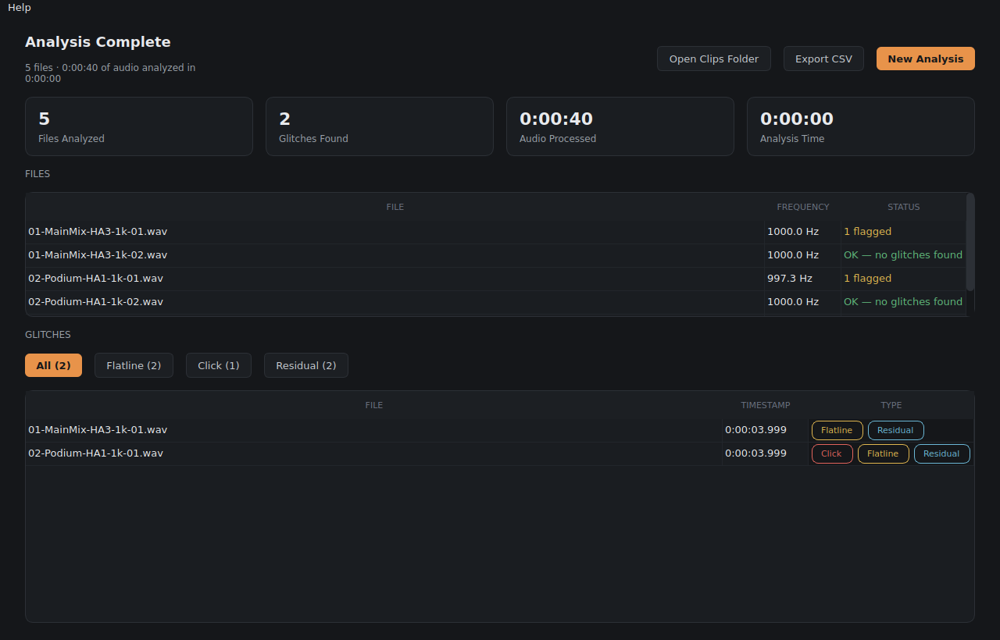
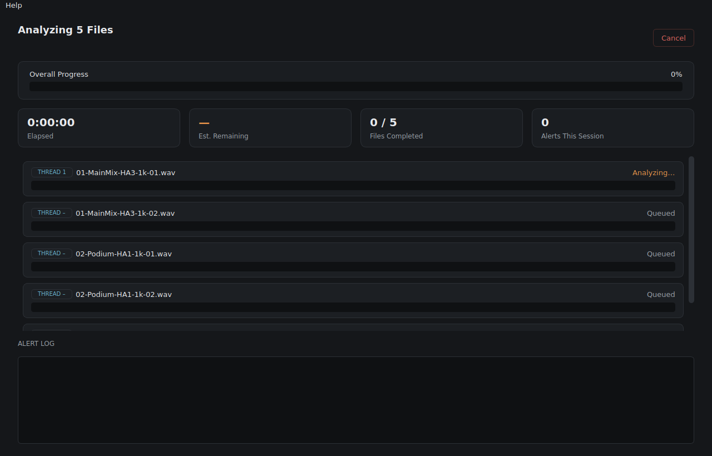
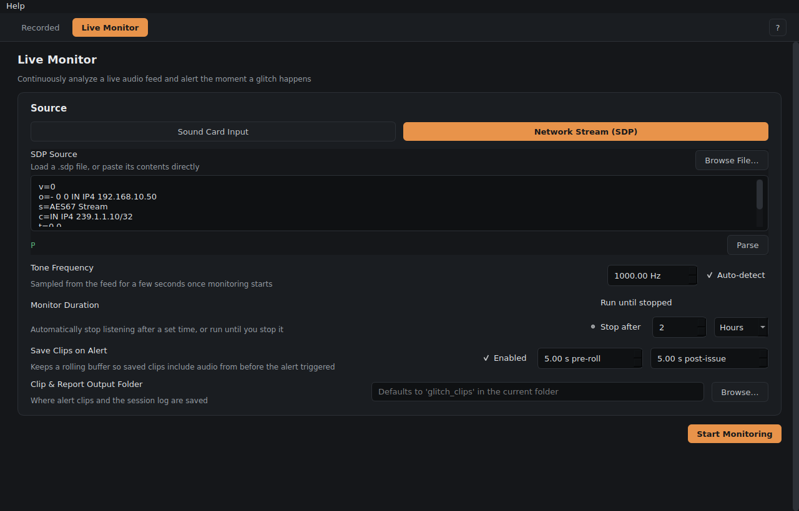

Analyze in parallel
Every file gets its own process and its own progress bar, with live elapsed time, an estimated finish time, and a running alert count as glitches turn up.

GlitchyGlitchy detects clicks, flatlines, distortion, and frequency deviation in test-tone recordings — analyze hours of files in parallel across every core, or watch a live feed continuously and get alerted the moment something breaks.
Free and open source, MIT licensed. Not notarized for macOS — see first-launch notes.

The same detection engine, whether you're auditing files you already have or watching a signal chain live.
Point it at a folder of recordings and it analyzes as many in parallel as your machine has cores — a stack of hour-long files finishes in minutes, not hours.
Watch a sound card input or a network audio stream (SDP/AES67, multicast included) continuously, with alerts and saved clips the moment a glitch happens.
No need to know the exact tone in advance — Glitchy samples each file or feed and finds it via FFT peak detection, accurate to a fraction of a Hz.
Every detected glitch can save a short WAV around it, with independently configurable pre-roll and post-issue timing so you get exactly the context you need.
Every file gets its own process and its own progress bar, with live elapsed time, an estimated finish time, and a running alert count as glitches turn up.

A local sound card input or a network stream described by an SDP file — paste it, or browse for the file — with a configurable run time and alerting.

Four distinct signal problems, each detected a different way.
A single-sample discontinuity — an abrupt jump far larger than the signal's normal movement. Usually a digital dropout, buffer underrun, or bad connection.
The signal freezes at one value longer than a real tone could ever sit still. Points to a sample-and-hold freeze or a dropped cycle.
Energy shows up outside the pure tone itself. Detected by filtering out the fundamental and checking what's left behind — often clipping or interference.
Cycle-to-cycle timing drifts from the expected tone, measured directly from zero-crossing spacing. Suggests sample-rate mismatch or clock drift.
Prebuilt downloads live on the Releases page. Both platforms are built from the same source with PyInstaller.
Glitchy.dmg from the latest release